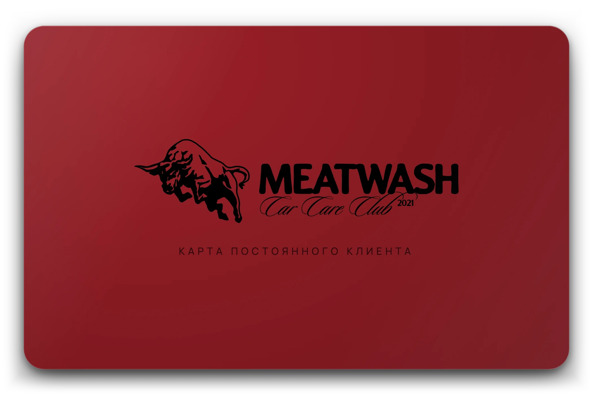

Подход к уходу
Ручной уход за автомобилем в Москве. Подбираем химию под покрытие, согласуем работы на приёмке и проверяем результат перед выдачей.
- 5.0
- Рейтинг на Яндекс Картах
- 2
- Локации в Москве
- 30 мин
- Мойка от
Согласование на приёмке
Проверка перед выдачей

Машина уезжает такой, какой её задумали на заводе — и остаётся такой дольше.MEATWASH CAR CARE CLUB
Студии и работы


Фото студий — из карточек Яндекс Карт, авторы — в разделе Материалы.
Перед визитом
Первое знакомство
Новым клиентам — защитное кварцевое покрытие кузова в подарок и скидка 500 ₽ на первую мойку. Условия уточняйте при записи.
Пока вы заняты
На Мясницкой два часа закрытого паркинга включены в мойку. В зоне ожидания — Wi-Fi, вода и кофе. Кофемания — этажом выше.
Удобная оплата
Карта, СБП, QR, наличные, безналичный расчёт и рассрочка. На Мясницкой можно оплатить из автомобиля. Онлайн-запись доступна круглосуточно.

Больше, чем сервис
Подарочные сертификаты, уход за корпоративным автопарком и индивидуальные комплексы. Обсудим условия и подберём удобное время.
Две студии в Москве
Мясницкая
Премиальная мойкаПодземный паркинг, −1 этаж.
Два часа парковки, Wi-Fi и зона ожидания.
Фотографии студии ↗
Технопарк
Детейлинг-центрТЦ «Мегаполис», 1 этаж.
Полировка, керамика, плёнка, кузовной ремонт и порошковая покраска дисков. Принимаем топливные карты.
Фотографии студии ↗
MEATWASH / CAR CARE CLUB
Записаться
Выберите студию. Услугу и время — в её онлайн-записи. Онлайн-запись доступна круглосуточно.